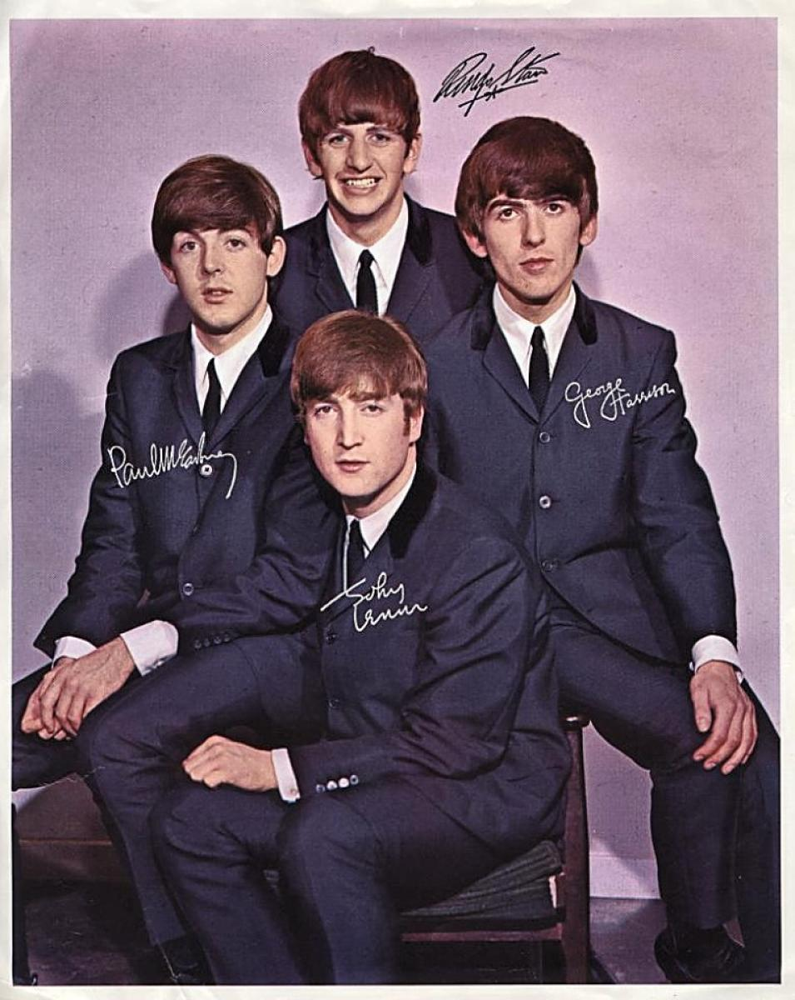

MEET THE BAND

Formed in Liverpool in 1960, The Beatles evolved from a skiffle group called The Quarrymen. Founded by John Lennon, The original lineup included members Paul McCartney and George Harrison. Throughout the late 1950s, The Quarrymen gradually shifted from skiffle to a more rock and roll-oriented sound.
At the suggestion of Lennon's art school friend Stuart Sutcliffe, and after several lineup changes, the band was renamed The Beatles in June 1960. During their first EMI recording session in August 1962, the band replaced their drummer, Pete Best, with Ringo Starr.
This core lineup of John Lennon, Paul McCartney, George Harrison, and Ringo Starr would go on to perform as The Beatles for the remainder of the band's active years, creating a lasting impact on music and culture. Together, they produced groundbreaking albums that pushed musical boundaries and influenced generations of artists.
MEET THE MEMBERS
THROUGHOUT THE ERAS
THE EARLY YEARS: 1962-1963
With the inclusion of Ringo Starr as the fourth final member of the band, The Beatles began their first recording sessions with George Martin at the EMI Recording Studios (later becoming Abbey Road Studios.)
It had been agreed early on that vocals from all four members would be included in the band's release albums. However, as the band grew in success, it was the songwriting union of John Lennon and Paul McCartney that came to dominate the lead vocals for the group.
During this period, The Beatles' first single 'Love Me Do' was released. While the song's chart performance was modest, it marked the beginning of the band's rise. The catchy, simple nature of the song, combined with its youthful energy, captured the public's attention and laid the foundation for the band's evolving sound in the years to come.
BEATLEMANIA: 1964-1965
The term 'Beatlemania' was coined by the British press during the years of 1964-1996 to denote the fanaticism surrounding The Beatles growing popularity. With popular hits like I Want to Hold Your Hand and She Loves You occupying both the number one and two spots on the Billboard Hot 100.
It was not long after that this fever would spread to the United States and a global audience. The Beatles arrived at John F. Kennedy airport to the screams of 3,000 fans. Two days later the band would perform on The Ed Sullivan Show to an estimated 73 million viewers (or 34% of the American population.)
Disillusioned with live touring, and wishing to expand away from traditional rock and roll to more experimental types of the music. The Beatles would end their final concert in August 1996. It was during this period that the albums Rubber Soul and Revolver were released. Both of which highlighted the growing maturity of the band and their willingness to expand their musical artform.
THE PSYCHEDELIC YEARS: 1966-1967
It was during their studio years that The Beatles began to increasingly incorporate an experimental style into their music. With influences such as Indian mysticism, classical orchestra, and steam organs being included alongside their more traditional sounds of guitar, drum and bass.
This shift in their musical style coincided with a broader cultural transformation, as the band became aligned with the counter-culture 'hippie' movement of the time. The band's vibrant colorful attire, long hair and droopy mustaches sported by each member marked a sharp departure from the clean-cut image that had previously made them icons.
From experimental music to experimenting with psychoactive drugs. The Beatles were hailed as an integral part of counter-culture and as lifestyle revolutionaries. The release of albums such as Sgt. Pepper's Lonely Hearts Club Band, Magical Mystery Tour and Revolver solidified this new age image to the public.
THE LATER YEARS: 1968-1970
The later years of The Beatles were marked by deteriorating relationships between the band members. Ringo Starr was the first to leave, though only for two weeks, leaving John, Paul, and George to record Back in the U.S.S.R. and Dear Prudence as a trio.
Meanwhile, the once strong songwriting partnership between John Lennon and Paul McCartney had fractured, with John becoming less interested in collaborating. Despite these internal conflicts, the band managed to produce two more albums: Abbey Road and Let It Be.
Abbey Road would come to be regarded as the Beatles' greatest artistic achievement. Showcasing the band at its musical best, and including the iconic album cover of the band walking across Abbey Road for the final time.
Abbey Road would be the last album recorded by The Beatles, though Let It Be was the final album released. On December 31, 1970, Paul McCartney filed for the legal dissolution of the band.